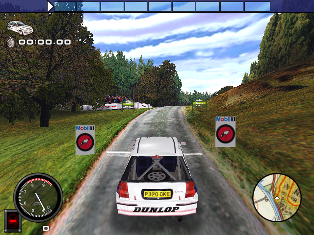
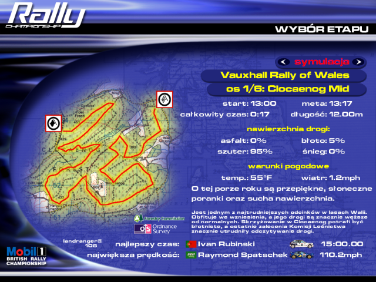
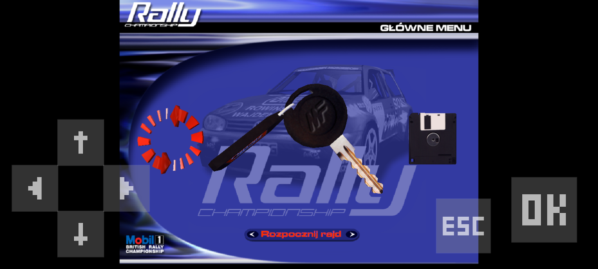
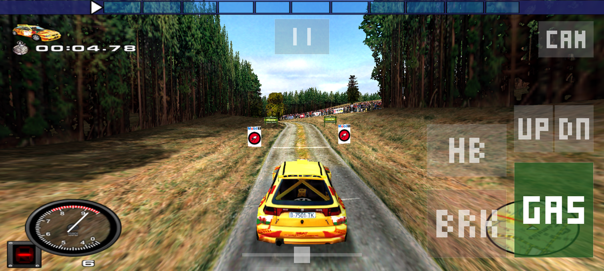

A performance fork of novocast/rally-championship-remaster for the R36S handheld (RK3326, 4x Cortex-A35, Mali-G31, ArkOS). Stage LEVEL33 at the native 640x480 went from about 23 fps to about 60 fps. 800x600 went from 18.5 to about 58 fps. Physics and rendered frames are unchanged: the same input gives byte-identical simulation records and screenshots.


Both screenshots were captured on the R36S itself (640x480).
Stage LEVEL33, gearbox 2, full throttle after 850 steps, 640x480. Figures are approximate averages of interleaved runs, not a lab benchmark.
RALLY_GL_NO_FAST=1).eglSwapBuffers. The call blocks about 10 ms with the CPU idle. An async swap thread overlaps that with the next frame's CPU work (RALLY_ASYNC_SWAP=1).scaling_max_freq to the top OPP (1296 MHz instead of the ArkOS 1248 MHz cap) and restores it on exit. The release build uses LTO.RALLY_GL_THREAD=0 disables it).Client-side vertex arrays proved faster than VBOs on this driver, so the vertex path stayed as it was.
At about 60 fps the GL thread is busy about 16.5 ms per frame (swap about 10 ms, GL calls about 6.7 ms) and the game thread about 15.7 ms (simulation 5 ms, drawing 10.7 ms). Both are close to saturated, so a separate simulation thread would not help on its own. Further gains need less GPU work and less driver work together.
--frame-ms 16 --steps N --dump FILE --shot FRAME:FILE): physics records and frame dumps have identical md5 with every feature on and off.Not verified: how it feels to play, input latency (the GL thread adds up to about one frame), temperatures and battery over a long session, and other devices. This needs a person with the console.
The same port runs on Android: SDL2 hosts it as libmain.so (GLES2, arm64-v8a and x86_64), built by the Gradle project in android/. The APK holds no game data; copy RAL.EXE and FILES from your own copy of the game to /sdcard/Android/media/org.rally.championship/game/.


Screenshots from the Android emulator (a 2400x1080 phone, 20:9, software GL), so frame rates measured there mean nothing.
port/plat/fopen_ci.h), which also lets the desktop Linux build run from an ISO extract.Not verified: everything on a physical phone (frame rate, touch feel, thermals, gamepad hot-plug, notches), the steering drag with two fingers (tested only by taps through adb and a unit check of the layout), and audio.
tools/portmaster/rallychampionship/Rally Championship.sh to /roms/ports/.grep R36S /proc/cpuinfo), picks 640x480, enables the GL thread and raises the CPU frequency.cmake -S port -B build -G Ninja \ -DCMAKE_TOOLCHAIN_FILE=cmake/toolchains/aarch64-linux-gnu.cmake \ -DRALLY_SYSROOT=/path/to/sysroot -DRALLY_TUNE=cortex-a35 -DCMAKE_BUILD_TYPE=Release cmake --build build
| Variable | Effect |
|---|---|
RALLY_GL_THREAD=0 | no GL thread |
RALLY_ASYNC_SWAP=1 | async swap thread (not used together with the GL thread) |
RALLY_GL_NO_FAST=1 | generic fragment shader only |
Code is in port/plat/plat_gl.c, plat_sdl2.c, the new plat_glthread.c/.h, and the launcher script. Two commits on top of upstream 1.1.0. The game data is copyrighted and is not in this repository.